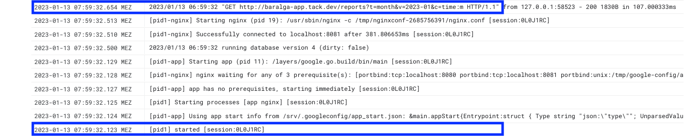
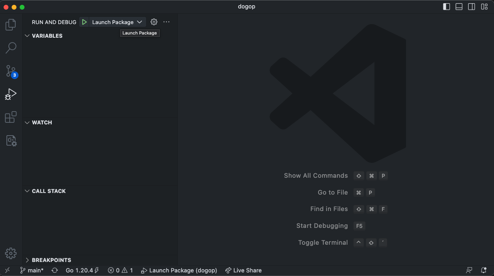
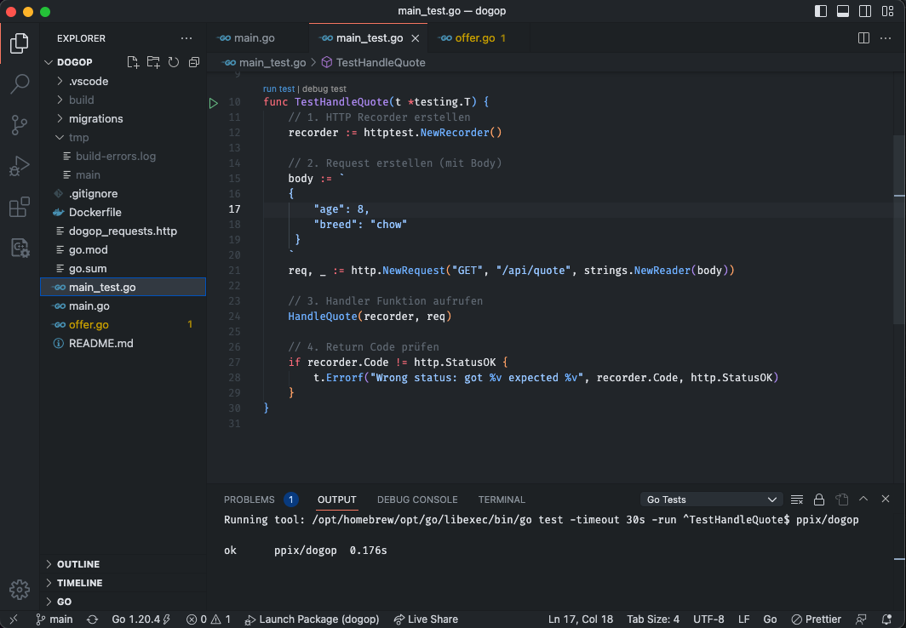
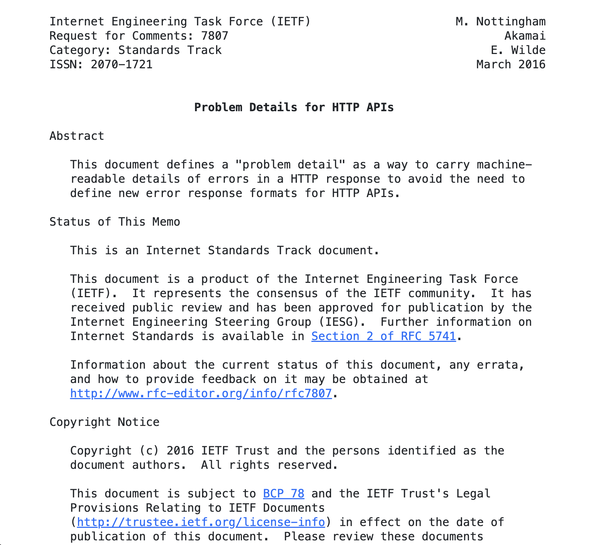

Go über den Wolken
Go App Engine Cold Start

Up and running in 500ms! 🚀
5 Fakten zu Go
- statisches Typsystem
- Garbage Collection
- keine Vererbung
- Concurrency eingebaut
- native Ausführung
Linux, Win, z/OS, 386, amd64, ARM, WebAssembly, ...

Was ist cloud-native?
Cloud Native Technologien befähigen
skalierbare Anwendungen
zu entwickeln und betreiben,
in modernen, dynamischen Umgebungen.
Cloud Native Computing Foundation
Cloud Native Booster
- 💪 Skalierbar
- 🚂 Zuverlässig
- ☯️ Einfach
Tarifrechner DogOP
Tarifrechner DogOp v0.1
- API die Hunde OP Versicherung berechnet
- Bereitstellung als Container
- Konfiguration über Umgebungsvariablen
Tarifrechner DogOp v0.2
- Angebote in Postgres speichern
- CRUD Operationen in REST API
Fallschirm und Rettungsgurt
- Health Check
- Problem Details
- Middleware
Tarifrechner
DogOp v0.1
Projekt DogOP aufsetzen
go mod init crossnative/dogop // Go Modul initialisieren
go get github.com/go-chi/chi/v5 // Chi Dependency einbinden
go.mod // Modul Deskriptor mit Dependencies
go.sum // Checksummen der Dependencies
Projekt DogOP aufsetzen
package main
import (
"net/http"
"github.com/go-chi/chi/v5"
)
func main() {
r := chi.NewRouter()
r.Get("/", func(w http.ResponseWriter, req *http.Request) {
w.Write([]byte("Hello DogOp!"))
})
http.ListenAndServe(":8080", r)
}
Bauen und Ausführen
// 1. Kompilieren in Binary
go build -o build/dogop .
// 2. Binary ausführen
./build/dogop
Bauen und Ausführen
REST API für Rechner
Request
POST /api/quote
content-type: application/json
{
"age": 8,
"breed": "chow"
}
Response
HTTP/1.1 200 OK
Content-Type: application/json
{
"age": 8,
"breed": "chow",
"tariffs": [
{
"name": "Dog OP _ Basic",
"rate": 12.4
}
]
}
REST API für Rechner
func HandleQuote(w http.ResponseWriter, r *http.Request) {
// 1. JSON Request lesen
var q Quote
json.NewDecoder(r.Body).Decode(&q)
// 2. Tarif berechnen
tariff := Tariff{Name: "Dog OP _ Basic", Rate: 12.4}
quote.Tariffs = []Tariff{tariff}
// 3. JSON Response schreiben
json.NewEncoder(w).Encode(quote)
}
func main() {
r := chi.NewRouter()
r.Post("/api/quote", HandleQuote)
r.Get("/", func(w http.ResponseWriter, r *http.Request) {
w.Write([]byte("Hello DogOp!"))
})
http.ListenAndServe(":8080", r)
}
Achtung, noch ohne Fehlerhandling! 💣
Struct statt Klasse
type Tariff struct {
Name string `json:"name"`
Rate float64 `json:"rate"`
}
type Quote struct {
Age int `json:"age"`
Breed string `json:"breed"`
Tariffs []Tariff `json:"tariffs"`
}
// Struct erzeugen
tariff := Tariff{Name: "Dog OP _ Basic", Rate: 12.4}
Fehler 💣
func HandleQuote(w http.ResponseWriter, r *http.Request) {
// 1. JSON Request lesen
var q Quote
json.NewDecoder(r.Body).Decode(&q) // 💣 Fehler möglich!
// 2. Tarif berechnen
tariff := Tariff{Name: "Dog OP _ Basic", Rate: 12.4}
quote.Tariffs = []Tariff{tariff}
// 3. JSON Response schreiben
json.NewEncoder(w).Encode(quote) // 💣 Fehler möglich!
}
Fehler 💣
- Go kennt kein spezielles Konstrukt zur Fehlerbehandlung
- Fehler sind normale Rückgabewerte
Fehler 💣
func HandleQuote(w http.ResponseWriter, r *http.Request) {
// 1. JSON Request lesen
var q Quote
// Potentieller Fehler
err := json.NewDecoder(r.Body).Decode(&q)
// Auf Fehler prüfen
if err != nil {
// Fehler behandeln
http.Error(w, "Could not decode quote.😔", http.StatusBadRequest)
return
}
// ...
}
HTTP Handler testen
- Unit Tests in Standardlib enthalten
- Tests in Datei
main_test.go
HTTP Handler testen
HTTP Handler testen
go test -v ./...
=== RUN TestHandleQuote
--- PASS: TestHandleQuote (0.00s)
PASS
ok crossnative/dogop 0.228s
HTTP Handler testen
Port per Umgebungsvariable konfigurieren
// Einfach per Standardlib
function main() {
port := os.Getenv("DOGOP_PORT")
http.ListenAndServe(fmt.Sprintf(":%v", config.Port), r)
}
Port per Umgebungsvariable konfigurieren
// Oder mit envconfig von Kelsey Hightower
type Config struct {
Port string `default:"8080"`
}
function main() {
var config Config
err := envconfig.Process("dogop", &config)
if err != nil {
log.Fatal(err.Error())
}
http.ListenAndServe(fmt.Sprintf(":%v", config.Port), r)
}
Dockerfile für DogOP
# 1. DogOp Builder
FROM golang as builder
WORKDIR /app
ADD . /app
RUN CGO_ENABLED=0 go build -ldflags="-w -s" -o build/dogop .
# 2. DogOp Container
FROM alpine
COPY --from=builder /app/build/dogop /usr/bin/
EXPOSE 8080
ENTRYPOINT ["/usr/bin/dogop"]
Tarifrechner
DogOp v0.2
CRUD API für Angebote
Create Request
POST /api/offer
content-type: application/json
{
"name": "Rollo",
"age": 8,
"breed": "chow",
"customer": "jan"
}
Create Response
HTTP/1.1 200 OK
Content-Type: application/json
{
"id": "427ed4de",
"customer": "jan",
"age": 8,
"breed": "chow",
"name": "Rollo"
}
Read Request
GET /api/offer/427ed4de
Read Response
HTTP/1.1 200 OK
Content-Type: application/json
{
"id": "427ed4de",
"customer": "jan",
"age": 8,
"breed": "chow",
"name": "Rollo"
}
CRUD API für Angebote
r.Route("/api/offer", func(r chi.Router) {
r.Post("/", HandleCreateOffer(offerRepository))
r.Get("/{ID}", HandleReadOffer(offerRepository))
})
Create Request mit Handler Function
func HandleCreateOffer(offerRepository *OfferRepository) http.HandlerFunc {
return func(w http.ResponseWriter, req *http.Request) {
// 1. JSON Request lesen
var offer Offer
json.NewDecoder(req.Body).Decode(&offer)
// 2. Offer speichern
createdOffer, _ := offerRepository.Insert(req.Context(), &offer)
// 3. JSON Response schreiben
json.NewEncoder(w).Encode(createdOffer)
}
}
Angebote speichern in Postgres
pgxals Postgres Driver und Toolkit- Interface
database/sqlin Go Standardlib
Angebote speichern in Postgres
type OfferRepository struct {
connPool *pgxpool.Pool
}
func (r *OfferRepository) Insert(ctx context.Context, offer *Offer) (*Offer, error) {
// ...
}
Angebote speichern in Postgres
func (r *OfferRepository) Insert(ctx context.Context, offer *Offer) (*Offer, error) {
// 1. ID generieren
offer.ID = uuid.New().String()
// 2. Transaktion beginnen
tx, _ := r.connPool.Begin(ctx)
defer tx.Rollback(ctx)
// 3. Offer per Insert speichern
_, err := tx.Exec(
ctx,
`INSERT INTO offers
(id, customer, age, breed, name)
VALUES
($1, $2, $3, $4, $5)`,
offer.ID, offer.Customer, offer.Age, offer.Breed, offer.Name,
)
if err != nil {
return nil, err
}
// 4. Transaktion commiten
tx.Commit(ctx)
// 5. Gespeicherte Offer zurückgeben
return offer, nil
}
Aus dem Context gerissen
return func(w http.ResponseWriter, req *http.Request) {
// ...
// 2. Offer speichern
createdOffer, _ := offerRepository.Insert(req.Context(), &offer)
// ...
}
func (r *OfferRepository) Insert(ctx context.Context, offer *Offer) (*Offer, error) {
// ..
// 2. Transaktion beginnen
tx, _ := r.connPool.Begin(ctx)
defer tx.Rollback(ctx)
// 3. Offer per Insert speichern
_, err := tx.Exec(
ctx,
`INSERT INTO offers
(id, customer, age, breed, name)
VALUES
($1, $2, $3, $4, $5)`,
offer.ID, offer.Customer, offer.Age, offer.Breed, offer.Name,
)
// ...
// 4. Transaktion commiten
tx.Commit(ctx)
// ...
}
Fallschirm und Rettungsgurt
Health Check
- Nutzung von
health-go(hellofresh) - Integration des Checks für
pgx
Health Check
// Register Health Check
h, _ := health.New(health.WithChecks(
health.Config{
Name: "db",
Timeout: time.Second * 2,
SkipOnErr: false,
Check: healthPgx.New(healthPgx.Config{
DSN: config.Db,
}),
},
))
// Register Handler Function
r.Get("/health", h.HandlerFunc)
Problem Details
Ungültiger Request
GET /api/offer/-invalid-
Response mit Problem Details
HTTP/1.1 400 Bad Request
Content-Type: application/problem+json
{
"reason": "invalid UUID format",
"status": 400,
"title": "invalid request"
}
Problem Details
Fehler behandeln
Mit Problem Details
if err != nil {
problem.New(
problem.Title("invalid request"),
problem.Wrap(err),
problem.Status(http.StatusBadRequest),
).WriteTo(w)
return
}
Mit Standardbibliothek
if err != nil {
http.Error(w, "invalid request", http.StatusBadRequest)
return
}
Middleware
- cross-cutting Features für alle Requests
(z.B. Logging, Authentifizierung) - erzeugen eine Kette von Handlern
router => middleware handler => application handler - implementieren das Interface
http.Handler
Middleware loggt Requests
func loggingMiddleware(next http.Handler) http.Handler {
return http.HandlerFunc(func(w http.ResponseWriter, r *http.Request) {
log.Printf("%v requested URL %v", r.Host, r.URL)
next.ServeHTTP(w, r)
})
}
func main() {
r := chi.NewRouter()
// Nutze Logging Middleware
r.Use(loggingMiddleware)
http.ListenAndServe(":8080", r)
}
Middlewares nutzen
func main() {
r := chi.NewRouter()
// Basis Middleware
r.Use(middleware.RequestID)
r.Use(middleware.RealIP)
r.Use(middleware.Logger)
r.Use(middleware.Recoverer)
// Timeout über Request Context setzen
r.Use(middleware.Timeout(60 * time.Second))
http.ListenAndServe(":8080", r)
}
Zusammenfassung DogOP
v0.1
- Go Projekt aufsetzen
- einfache Rest API Handler
- Konfiguration per Umgebungsvariable
- Structs
- Fehler behandeln
- Unit Tests
- Docker Container bauen
v0.2
- CRUD API für Angebote
- Angebote in Postgres speichern
- Context
- Health Check
- Problem Details
- Middleware
Cloud Native Booster
- 💪 Skalierbar
- 🚂 Zuverlässig
- ☯️ Einfach
3 Gründe für Go
- Einfach
- Mächtig
- Langweilig